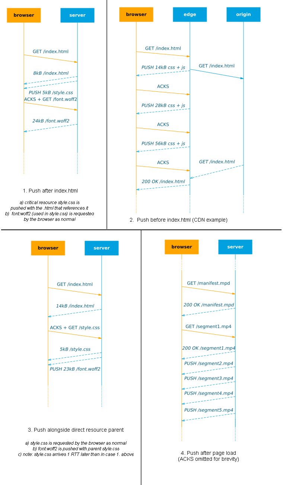

REVIEW VERSION: please send comments and feedback to robin.marx@uhasselt.be
body { width: 650px; } .caption { width: 100%; text-align: center; font-style: italic; }HTTP/2 Push : The details
HTTP/2 (h2) is here and it tastes good! One of the most interesting new features is h2 push, which allows the server to send data to the browser without having to wait for the browser to explicitly request it first. This is useful because normally we need to wait for the browser to parse the .html file and discover the needed links before these resources can be sent. This typically leads to 2 Round-Trip-Times (RTTs) before data arrives at the browser (1 to fetch the .html, then 1 to fetch a resource). So with h2 push, we can eliminate this exta RTT and make our site faster! It is conceptually similar to inlining critical CSS/JS in the .html, but should give better cache utilization. It also helps to ensure better bandwidth utilization at the start of the connection. Plenty of posts talk about the basics, how to use it on different platforms and how to debug it.

In an ideal world with unlimited bandwidth, we could theoretically just push all our resources with the .html, eliminating waiting for the browser completely! Sadly, in practice, even pushing just a little bit too much data can actually lead to significant slow downs in site loads.
This post aims to look at some of the low-level issues that determine how useful push can be and how this impacts pratical usage. The text should be accessible for relative newcomers to the topic, while more advanced readers can find in-depth information in the many reference links and sources.
1. Underlying basic principles and limits
The performance of h2 push is heavily dependent on the underlying networking protocols and other aspects of the h2 protocol itself. Here we introduce these principles on a tangible level to later discuss them more practically in chapter 2.
1.1 Bandwidth and TCP slow start
On the internet, every connection has a limited amount of bandwidth. If we try to send too much data at once, the network will start discarding the excess to keep the link from getting flooded/congested (packet loss). For this reason, the reliable TCP protocol uses a mechanism called slow start which basically means we start sending just a little bit of data at first and only increase our rate if the network can handle it (no packet loss occurs). In practice, this initial congestion window (cwnd) is about 14kB on most linux servers. Only when the browser confirms it has successfully received that 14kB will the cwnd double in size to 28kB and we can send that much data etc.

- 1. normal push like above : 4kB html, 9kB style.css
- 2. partial push: 10kB html, 20kB style.css : single ACK needed
- 2. no push: 10kB html, 20kB style.css
This means that on a cold connection, we can only send 14kB of data to the browser in the first RTT anyway: if we push more, it is buffered at the server until the browser ACKs this first 14kB. In that case, push can have no additional benefits: if the browser just issues a new request along with the ACKs, it would have a similar effect (2 RTTs needed to download the full resource, see figure 2). Of course, on a warm/reused connection, where the cwnd has already grown large, you can push more data in 1 RTT. A more in-depth discussion of this can be found in chapter 1 of this excellent document.
1.2 Priorities
HTTP/2 only uses a single TCP connection on which it multiplexes data from different requests. To decide which data should be sent first if multiple resources are waiting at the same time, h2 employs priorities. Basically, each resource is given a certain order in which it has to be sent: for example .html is the most important, so it has a priority of 1, .css and .js get 2 and 3, while images get 4.
If we have multiple resources with the same priority, their data is interleaved: each sends a chunk in turn. This interleaving can lead to both resources being delayed, as it takes longer for them to fully download. This can work well for progressively streamed/parsed resources, such as progressive jpgs or .html, but possibly less so for resources that need to be fully downloaded to be used (e.g. .css, .js and fonts).

HTTP/2 prioritization is much more complex than these examples, sorting priorities into trees and also allowing interdependencies and weights for subtrees to help decide how bandwidth should be distributed (and how interleaving should be done). Many interesting posts have been written on this.
[comment]: <> (TODO: include? The exact values of the priorities and weights can have a major impact on general HTTP/2 performance, not just for push.)
1.3 Buffers
Networks use a lot of buffering on all levels (routers, cell towers, OS Kernel, etc.) to handle bursts of incoming data which cannot be immediately transmitted. In most cases, once data is in one of these buffers, it's impossible to get it out or re-arrange the data in the buffer. This can make it impossible to correctly apply the HTTP/2 priorities; as a contrived example, if we push 3 large images right after our .html, they can fill up the send buffer. The browser then parses the .html, discovers an important .css file and requests it. The server wants to send this before the rest of the images, but can't because it is unable to access data in the buffers. Its only choice is to send the .css after some image data, effectively delaying it and the page load, see figure 4.

One possible solution for this is limiting the use of the kernel buffer as much as possible and only give data to the kernel if it can be sent immediately, as explained in detail by Kazuho Oku. This is only partly a solution however, since there can also be significant bufferbloat in the network itself. If the network allows the server to send at a high rate, only to then stall the data in large internal buffers, we will see the same detrimental effect. This becomes a greater problem for warm connections, that can have more data in-flight at the same time. This issue is discussed further by google engineers in chapter 2 of this excellent document. Interestingly, they argue that h2 push can also help with this issue, by pushing (only) critical resources in the correct order. This means knowing this exact order is important to get the most out of h2 push (and that pushing images directly after .html is probably a bad idea ;).
1.4 Caching
Modern browsers (and network intermediaries like CDNs) make heavy use of caching to quickly load previously downloaded resources without having to issue a new request to the server. This of course means we don't want to push already cached resources, as this would waste bandwidth and might delay other resources that aren't cached yet. The problem is knowing which resources are cached; ideally the browser would send along a summary of its cache when requesting index.html, but this concept is not in the official HTTP/2 standard and not implemented in any browser at this moment. Instead, the official method is that the browser can signal the server to cancel a push with a so-called RST_STREAM reply to a PUSH_PROMISE. However, in practice, browsers don't do this either, and will happily accept pushes for resources they have already cached. Even if they would use RST_STREAM, we can question how effective it would be: much (or all) of the data of the push can already be en-route/buffered before the RST_STREAM arrives at the server, rendering it void.

To work around these shortcomings while we wait for an official browser implementation, several options have been proposed, see chapter 3 of this excellent document. The canonical concept is to have the server set a cookie detailing which resources it has pushed and check this cookie for each request to see what should be pushed. This seems to work well in practice, though it can fail if resources are removed from the client's cache in the mean time.
2. Practical implications
Now that we have a good understanding of the underlying principles at work, we can look at how these affect using h2 push in practice.
2.1 When to push?
"When to push?" is difficult to answer and depends on your goals. I can see rougly 4 major possibilities, each with their own downsides:
When1. Directly after index.html (benefit limited to: cwnd - size(index.html)) When2. Before/while waiting for index.html (can slow down actual .html if wrongly prioritized/buffered) When3. Alongside resource (easier to get order/priorities right) When4. After page fully loaded (not for improving key metrics)

- 1 push directly after (with congestion window sizes, see EXTRA_akamaiEdgePush.png)
- 2 a) push during index.html generation on origin (with congestion window sizes, see EXTRA_akamaiEdgePush.png)
- 2 b) push during index.html generation on edge (with congestion window sizes, see EXTRA_akamaiEdgePush.png)
- 3 push .woff2 with style.css
- 4 push 5 .mp4 segments
It seems that When1 is what most people think about when talking about push, while it's arguably the least useful in the list, especially on cold connections (see 1.1). Conversely, When2 is a lot more interesting: we can actually increase the congestion window up-front, so that even large .html responses can be sent in a single RTT when they become available. Especially in the case of CDNs/edge servers this can work quite well if the origin is far away/slow: because of the small RTT between client and edge, the cwnd can grow quite quickly. It is difficult to fine-tune though: if we push too much we might fill up the buffers (1.3) and might not be able to prioritize the .html correctly. Still, if done right, they can help a lot with both initial load times and making better use of available bandwidth. Colin Bendell created www.shouldipush.com to help you assess the gains your site can make if pushing before index.html (before "TTFB: time to first byte") and after index.html (before "TTFR: time to first resource").

[comment]: <> (TODO: mention wim leers here: pushing user-inserted images on drupal site?)
Option 3 might be a little less optimal for faster first load, but this approach might make it (much) easier to manage what to push and limit the risks of delaying other resources (see next in 2.2) as resources are closely tied to other data we know is related.
Finally we have option 4, which is often ignored and sometimes controversial because there seems to be a direct, more attractive competitor: "Resource Hints" (which you may know as ). Using resource hints can trigger the browser to fetch a resource before it needs it. It's often seen as superior to push because a.o. it works cross origin, doesn't suffer from the (current) caching problems and the browser can better decide how to fit it into the download schedule. So after the page is fully loaded and we have some javascript running, we might as well fetch any resource we need via the Resource Hints instead of pushing them.
Still, I feel there is a lot of room for experimentation here and cases where push can have its place. For example, in academic literature, many papers have investigated push to [speed-up video segment delivery][paperPushN]. The MPEG-DASH standard streams videos in smaller segments (e.g. 3s) and instead of waiting for the browser to request the next segment (in time before the current one runs out), we can use push to instead send available segments down so they are immediately available. Another interesting paper is [MetaPush][paperMetaPush]: here they use knowledge ... .
Amazon + service workers
!TODO: paperPushN !TODO: paperMetaPush
- mpeg-dash
- metapush
- facebook in-app
- amazon prefetch
- combinations with service workers
1 and 2 primarily help with the initial stages
why do 3 at all? easier to setup and maintain (see 2.2).
lots of opportunities in 4, lots of competition from preload/prefetch as well... tradeoffs need to be investigated.
[comment]: <> (A lot of posts/comments on h2 push seem to focus on the "push directly after index.html" use case, which will be limited to the initial 14kB cwnd for cold connections, and as such debate the real potential of push. There are however several other options. Colin Bendell talks about various opportunity windows to optimize bandwidth usage: time to first byte (index.html), time to first resource, time to full throughput, etc. Without push, a lot of bandwidth can remain unused, especially during the early stages. His new tool www.shouldipush.com helps give some insight into this.)

But even Colin seems to primarily look towards opportunities during initial page load, while push can also be used later.
A non-exhaustive list of push options could be:
- directly after index.html on origin (primarily limited by intitial cwnd, good for fast .html)
- before index.html on origin (good for slow .html)
- before index.html on edge (good for non-cached .html)
- alongside critical resource (easier to get order/priorities right)
- after page fully loaded
- ...

Link: -> is at ttfb, together with .html, not before -> manually instrument (ex. in node.js or java)
image from: http://blog.kazuhooku.com/2015/12/optimizing-performance-of-multi-tiered.html also good images from: http://www.slideshare.net/kazuho/developing-the-fastest-http2-server
{kind=link}
Facebook pushes images during load
? push to CDN, not to client?
- QUIC as future mitigation for buffer problems
2.2 What to push?
https://github.com/GoogleChrome/http2-push-manifest http://engineering.khanacademy.org/posts/js-packaging-http2.htm
For both When1 and When2, we mostly talk about cold connections but not about warm connections while they can have a much larger gain (e.g. the second/third/... page we load in a single session while connections stay open at a high cwnd). I haven't seen much material that looks into how push behaves on warm connections in practice (except, of course, for this excellent document, chapter 1), though I can imagine this can get quite complicated in practice because of caching. Though on a site that re-uses the same critical resources on each page, push might become an option even for non-critical resources (as the critical ones are already cached from the first page load). To a lesser extent, this also goes for a repeat visit from a cold connection. All this conspires to make it very difficult to know what to push at any given time, see 2.2.
TODO: image for cold vs warm, page 1 load vs page 2 load (page 2 can push images, if page 1 pushed/cached .css and .js)
TODO: discuss example of a file of size > 28kB? ex. html 10kB, css TODO: mention streamed resources (Ex. html!) -> might benefit from initial push -> mention this in the Practical usage??? -> https://github.com/samccone/streaming-css -> https://jakearchibald.com/2016/link-in-body/
! Akamai RUM doesn't directly mention warm connections... possibly too early for this
Data in a buffer cannot be re-prioritised. If pushed images are in buffers and critical CSS request arrives, needs to wait behind images -> makes cache-digest super-important if pushing anything other than critical assets for first paint
- akamai prioritizes css and fonts
- h2o prioritizes all pushed js and css (assumes it's critical) (TODO: FIND REFERENCE!)
- apache has default settings (see link)
pushAtFacebook
SPA code splitting (lazy load of routes + prediction = bingo!) Save-data header: respect it! push metadata (ex. dependency graph, metapush) -> normally push what is going to be requested anyway, but can also do things browser normally doesn't know about (ex. only used in sw)
2.3 How to push?
Most importantly: browsers currently do strange things with priorities and servers even stranger. -> https://speakerdeck.com/summerwind/2-prioritization -> http://blog.kazuhooku.com/2015/04/dependency-based-prioritization-makes.html
Preload/prefetch has problems 1.2 and 1.3
Early Hints -> see image "issue with Link: rel preload;" : http://www.slideshare.net/kazuho/developing-the-fastest-http2-server
send html fully first? send blocking js/css fully first, then html? -> similar happens when not pushing: browser requests all files at once, if interleaving or misprioritization, end up with wrong order (less likely though, since browser requests in DOM order...)
service workers: knows what's cached, can micromanage?
3. Other considerations
Preload suffers from some similar problems: filled buffers/low bw, prioritization can fuck things upTM
amazon @ velocity: prefetch is too slow for large # features... push could work better
Vary: cookie Cache-busting parameters / pushing old versions (stuff.js?v=1)
4. Personal conclusions
too focused on cold connections with fast servers... when origin is slow (ex. company intranets, SAP!) or when using warm connections, much more is possible -> preload/prefetch can help, but less control because who knows how browser behaviour works: push can put control into hands of devs? -> cross-page : use prediction to preload next things
probably too much competition from link rel="prefload" and prefetch in practice though... push might die a silent death...
- service workers enable a lot of different options, need testing in future to see what works best
-> predicting next page + dependency graphs is key tech needed here, and it's coming, which is great!
push to fill the pipe, push while waiting push the right stuff, push in the right order, push enough but not too much source
what to push?
Recently release Drupal h2 push module (https://www.drupal.org/project/http2_server_push) simply pushes all css and js
 caption test
caption test
function (){ var x = 10; }
code example <b>test</b>You can use numbers for reference-style link definitions
[1]: http://slashdot2.org
custom sequence diagrams were made with the awesome https://mscgen.js.org/